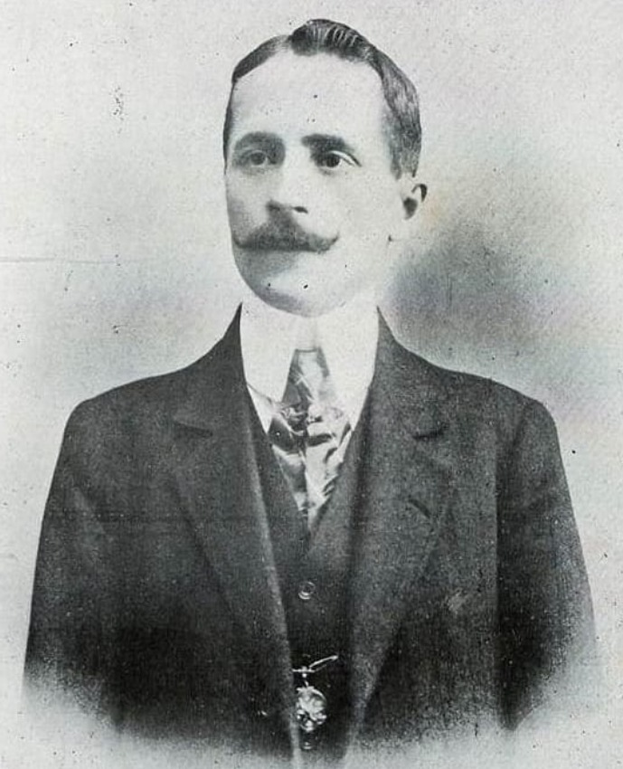
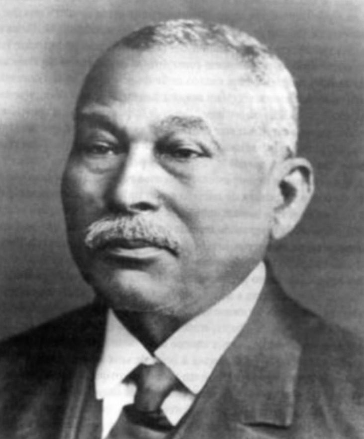
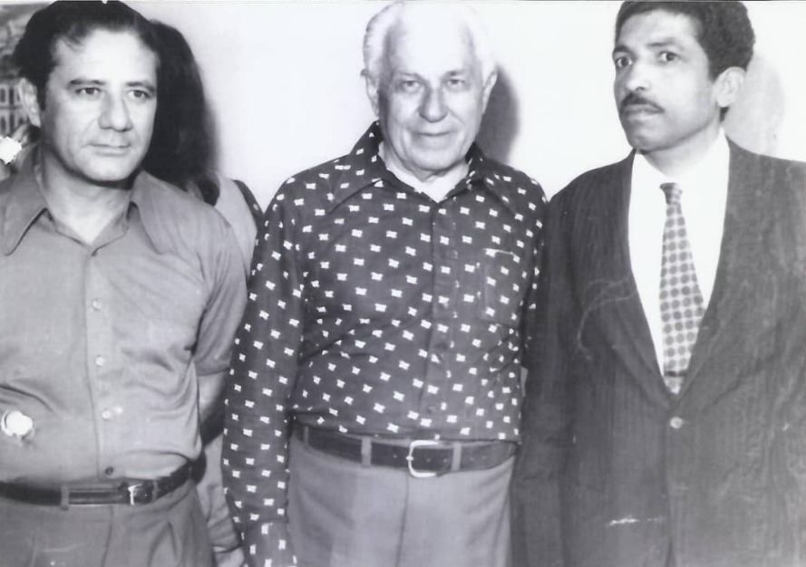
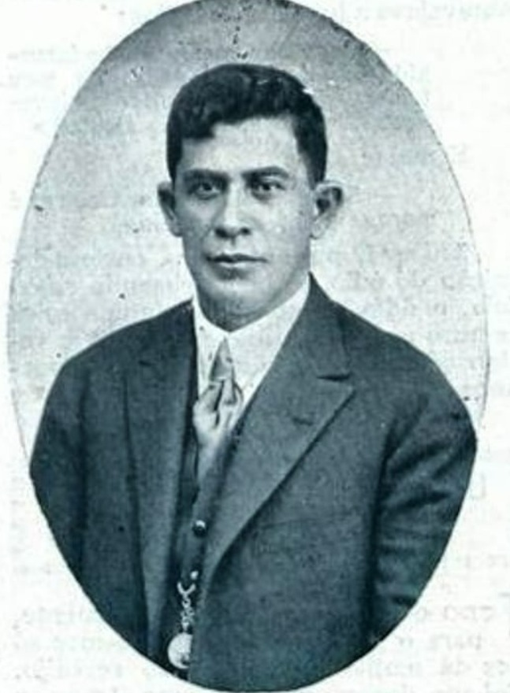
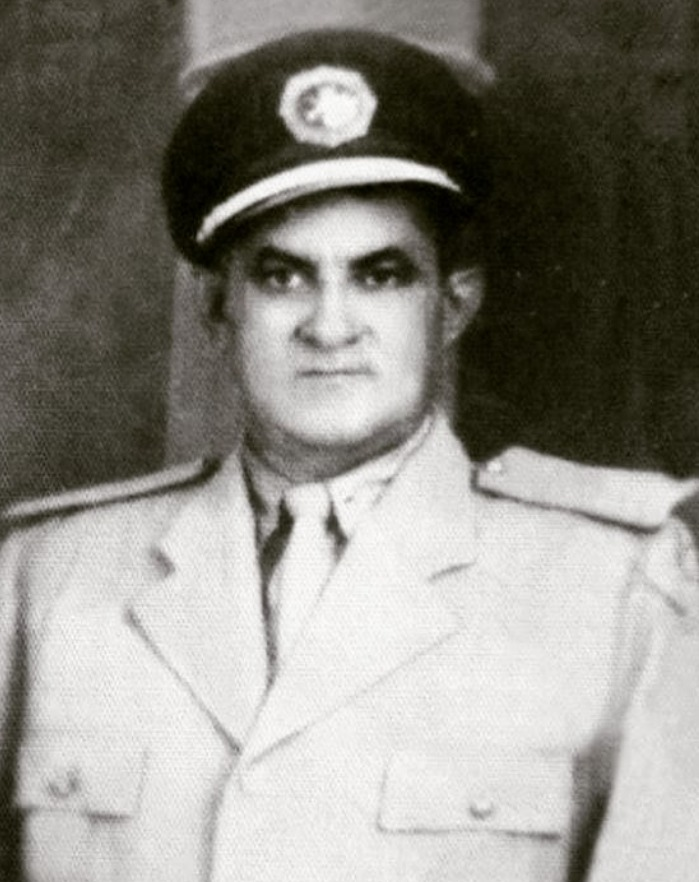
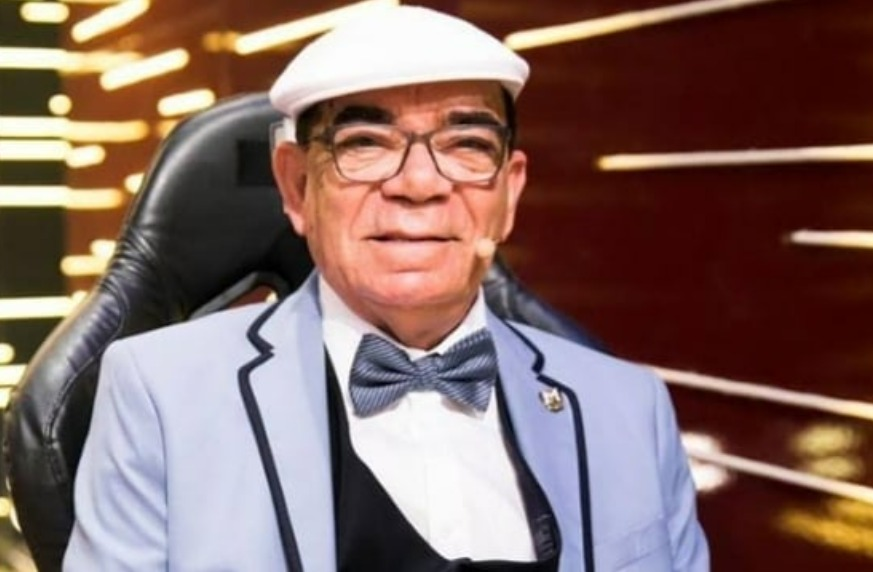
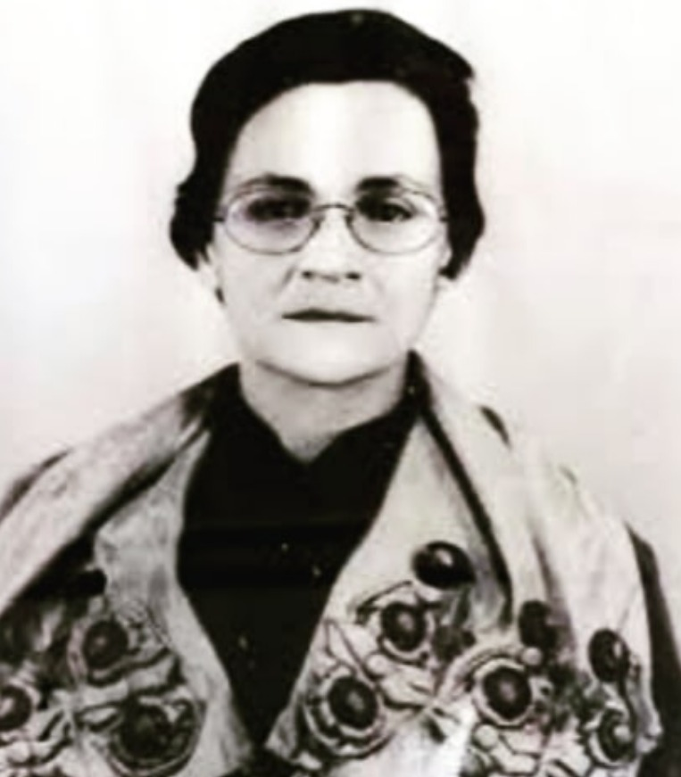
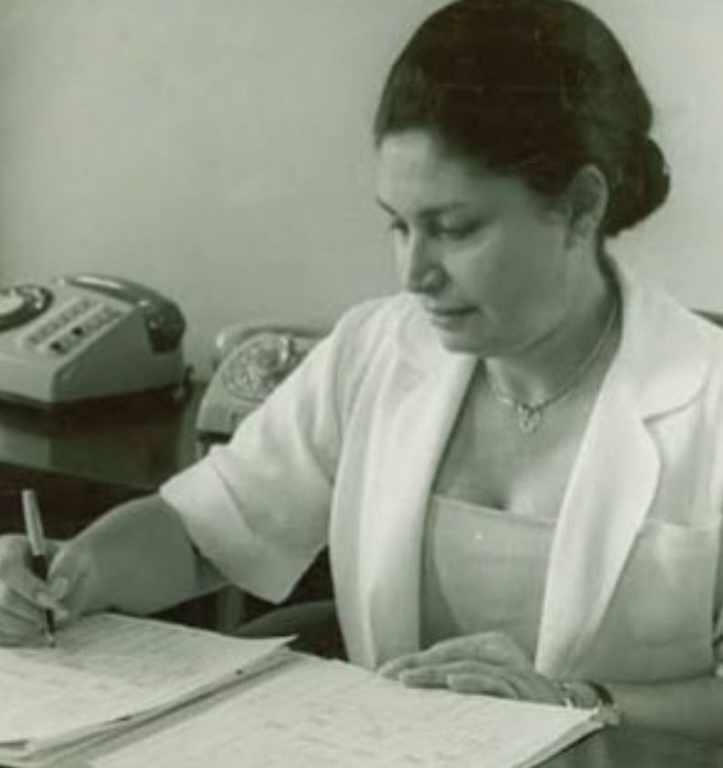
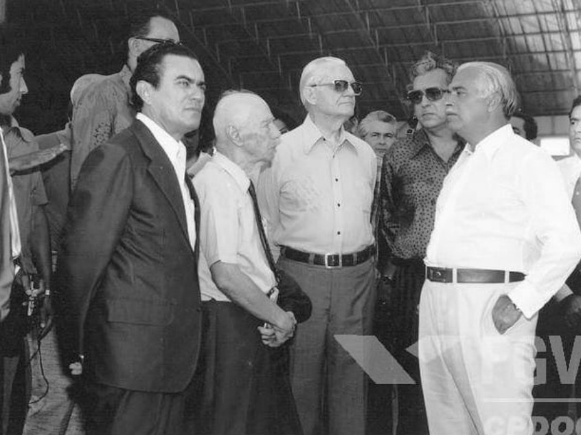

Personalidades Históricas

Dr. Olyntho Baptista Leone
primeiro intendente de Itabuna (1908- 1912).

Firmino Alves
Comendador Firmino Alves, o fundador de Itabuna.

Da esquerda: Fernando Almeida Cordier (prefeito de Itabuna, BA) no período 1968-1972, Luis Viana Filho (governador da Bahia no período 1967-1971) e Nilton Ramos (secretário municipal).

Hentique Félix dos Santos
Henrique Félix dos Santos. Temido fazendeiro itabunense. Foi casado com uma sobrinha de Firmino Alves. Atuou como subdelegado de Tabocas e foi cofundador da Santa Casa de Misericórdia de Itabuna, em 1917. Felix era correligionário do coronel Henrique Alves dos Reis, ambos adamistas-mangabeiristas. Possuía a patente de tenente-coronel, concedida pela Subcomissão da Organização de força da 2ª. linha dos Oficiais do Exército.

Odilon Flor
Odilon Flor (Odilon Nogueira de Souza), contumaz perseguidor do bando de Lampião em seis estados nordestinos. Em Itabuna (BA), assumiu a função de Delegado Regional, onde faleceu, em 7/11/1950, acometido de um câncer na garganta, aos 47 anos, onde foi sepultado. Canção "A luta do Enforcado", autoria de Odilon Flor: "Lampião diz que é valente/é nada, é corredor/correu tanto do Enforcado/que a poeira levantou".

Pelé do Snooker
Pelé do snooker (bilhar), o itabunense Rui Chapéu (José Rui de Mattos Amorim), aos 79 anos. Rui nasceu em Itabuna em 21/3/1940. O reconhecimento nacional aconteceu a partir de suas aparições na televisão, inicialmente com Silvio Luiz, na Record (1979), e depois com Luciano do Valle, na Bandeirantes (década de 80).

Valdelice Pinheiro
Poetisa e filósofa, itabunense, Valdelice Soares Pinheiro, nascida em 24/1/1929 e falecida em 1993. Fez parte do círculo de intelectuais fundadores da Universidade Estadual de Santa Cruz (antiga FESPI).

Arlette Maron de Magalhães
Arlette Maron de Magalhães, itabunense três vezes primeira dama do Estado da Bahia. Dona Arlette nasceu na cidade de Itabuna, em 15/11/1930, filha de imigrantes libaneses (Carlos e Odete Maron) que chegaram na região ainda no inicio do século XX. Era esposa do político Antonio Carlos Magalhães e é avó do prefeito de Salvador, ACM Neto. Embora casada com o mais influente e popular político baiano, sempre primou pela discrição, trabalhando reservadamente na área social. Faleceu em 7/10/2017, com 86 anos, em Salvador.
Dom Ceslau
Dom Ceslau é polonês, nascido no município de Szerzyny, na Cracóvia, morava no Brasil desde 1972. Pastoreou, como bispo diocesano, a comunidade católica de Itabuna por 20 anos (1997 - 2017). Além das atividades eclesiásticas, sempre esteve ativo em prol do desenvolvimento da sociedade grapiúna, inclusive em sua luta pela implantação do curso de Medicina na UESC. Também é escritor e membro da Academia Grapiúna de Letras.

José Oduque Teixeira (prefeito de Itabuna no período 1973-1977), Ernesto Geisel presidente do Brasil no período 1974-1979) e Antonio Carlos Magalhães (governador da Bahia no período 1971-1975), em 11/12/1973, em visita a fábrica da Mocambo (Uruçuca-BA).